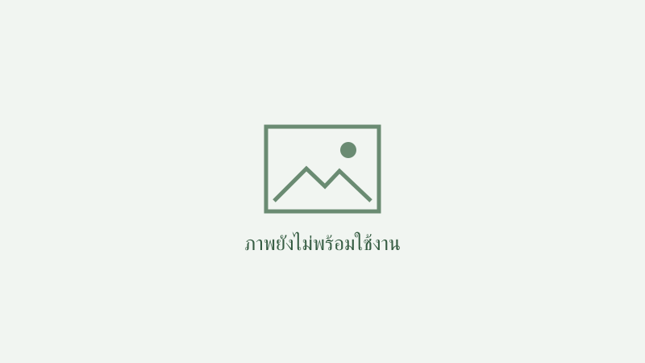

มูลนิธิเพาะพันธุ์ปัญญา ด้วยการสนับสนุนของธนาคารกสิกรไทย สานต่อโครงการเพาะพันธุ์ปัญญาแคมป์ รุ่นปี 2567 ภายใต้แนวคิด ‘อัพเวลสกิลธุรกิจ เสริมทักษะชีวิต ติดปีกผู้ประกอบการ’ สร้างเสริมประสบการณ์ด้านธุรกิจให้แก่เยาวชนระดับมัธยมศึกษาของจังหวัดน่าน จำนวน 50 คน จาก 13 โรงเรียน ตลอดระยะเวลา 79 วัน ผ่านกระบวนการเรียนรู้ในการดำเนินธุรกิจที่ออกแบบตามแนวคิดเพาะพันธุ์ปัญญา เพื่อสร้างองค์ความรู้และประสบการณ์จากการลงมือปฏิบัติด้วยตนเองตามกระบวนการโครงงานฐานวิจัย แคมป์เพาะพันธุ์ปัญญาถือเป็นการเรียนรู้นอกหลักสูตรที่จัดทำในช่วงปิดเทอม ทักษะและประสบการณ์นอกห้องเรียนที่ได้นี้ จะเสริมประโยชน์ต่อการเรียนรู้ของเยาวชน พัฒนาทักษะในการทำงานร่วมกับผู้อื่น และความสามารถในการประยุกต์ความรู้ใหม่ใช้กับสถานการณ์จริงที่ตนเผชิญ
ดร.อดิศวร์ หลายชูไทย กรรมการผู้จัดการ มูลนิธิเพาะพันธุ์ปัญญา เปิดเผยว่า มูลนิธิเพาะพันธุ์ปัญญาก่อตั้งขึ้นเพื่อสานต่อแนวคิดเพาะพันธุ์ปัญญา ที่มุ่งส่งเสริมให้เกิดการเรียนรู้ตามหลักผลเกิดจากเหตุ เพื่อให้เยาวชนสามารถคิดวิเคราะห์แนวทางในการแก้ปัญหา ต่อยอดโอกาสในการพัฒนาตนเอง และสร้างโอกาสในการเรียนรู้ตลอดชีวิต อันนำไปสู่การใช้ชีวิตอย่างยั่งยืนในอนาคต จึงได้จัดทำโครงการเพาะพันธุ์ปัญญาแคมป์ขึ้นในช่วงปิดภาคการศึกษา โดยมีพันธกิจสำคัญ คือการทำให้เยาวชนสามารถเข้าถึงความรู้ใหม่ พัฒนาทักษะใหม่ และเก็บประสบการณ์การเรียนรู้ที่เป็นประโยชน์ต่อการดำรงชีพ โดยเข้าร่วมแคมป์การทำธุรกิจเชิงปฏิบัติการและการเรียนออนไลน์ รวมถึงการเรียนรู้จากวิทยากรมืออาชีพในหลากแขนง
ผลการดำเนินโครงการเพาะพันธุ์ปัญญาแคมป์ รุ่นปี 2567 ภายใต้แนวคิด ‘อัพเวลสกิลธุรกิจ เสริมทักษะชีวิต ติดปีกผู้ประกอบการ’ มีเยาวชนระดับมัธยมศึกษาของจังหวัดน่านเข้าร่วมโครงการ จำนวน 50 คน จาก 13 โรงเรียน ระหว่างเดือนกุมภาพันธ์ถึงเดือนมิถุนายน โดยตลอดระยะเวลา 79 วัน เยาวชนได้เรียนรู้การทำธุรกิจและลงมือปฏิบัติจริงผ่านแคมป์ต่าง ๆ ประกอบด้วย
แคมป์เพาะกล้า เพื่อฝึกฝนทักษะเบื้องต้นในการเป็นผู้ประกอบการ เยี่ยมชมสถานประกอบการในจังหวัดน่าน เพื่อเตรียมความพร้อมก่อนเข้าสู่แคมป์หลักอีก 3 แคมป์ ได้แก่
แคมป์ที่ 1 กล้าเรียน เพื่อปูพื้นฐานในการสร้างสรรค์ไอเดียธุรกิจ ความเป็นไปได้ และเรียนรู้สิ่งที่จำเป็นในการทำธุรกิจ นำความรู้ที่ได้ไปพัฒนาไอเดียธุรกิจที่มีคุณค่า เพื่อสร้างผลิตภัณฑ์และนำไปทดลองตลาด (Minimum Viable Product: MVP)
แคมป์ที่ 2 กล้าลุย เพื่อบุกตลาด ลงมือขาย พบลูกค้าตัวจริง เรียนรู้จุดเด่น จุดด้อย เพื่อพัฒนาต่อยอดผลิตภัณฑ์และบริการ และเดินหน้าจัดจำหน่ายเป็นธุรกิจจริง
แคมป์ที่ 3 กล้าก้าว เพื่อรายงานและนำเสนอผลประกอบการจากการทำธุรกิจจริงในระยะเวลา 2 เดือนต่อคณะกรรมการ ซึ่งเป็นผู้ทรงคุณวุฒิและนักธุรกิจตัวจริง รวมถึงผู้ถือหุ้นที่เป็นเจ้าของทุนที่ใช้ในการทำธุรกิจ นอกจากนี้ เยาวชนที่เข้าร่วมโครงการยังได้เปิดโลกทัศน์เรียนรู้ประสบการณ์จากบุคคลต้นแบบที่ประสบความสำเร็จด้านธุรกิจและผู้นำความคิดด้านการพัฒนาอย่างยั่งยืนระดับประเทศตลอดช่วงเวลาของการเข้าแคมป์อีกด้วย
ในกระบวนการเรียนรู้ตลอดการเข้าแคมป์ 79 วัน เยาวชนจาก 13 โรงเรียน ทั้ง 10 ทีม มีพัฒนาการความก้าวหน้า เกิดการพัฒนาระบบคิด วิเคราะห์ การใช้ตรรกะ การเรียนรู้ด้วยตนเอง ด้วยกระบวนการเพาะพันธุ์ปัญญา โดยใช้การทำโครงงานฐานวิจัยเป็นกลไกในการสร้างกระบวนการเรียนรู้ให้เกิดขึ้น
ซึ่งในกระบวนการทำโครงงานฐานวิจัย เยาวชนได้ใช้เรื่องการทำธุรกิจหรือการเป็นผู้ประกอบการมาเป็นหลัก และได้ลงมือทำจริงด้วยตนเอง จึงได้รับทั้งความรู้ ทักษะ และประสบการณ์จริง พร้อมได้รับแนวคิดจากผู้ประกอบการ ซึ่งสามารถนำไปประยุกต์ใช้ในการในการประกอบอาชีพต่าง
ๆ ได้ในอนาคต
ทั้งนี้ โรงเรียนที่มีผลการประเมินพัฒนาการโดดเด่น 3 อันดับแรก ได้แก่ 1. ทีมโรงเรียนเมืองยมวิทยาคารและโรงเรียนหนองบัวพิทยาคม 2. ทีมโรงเรียนนาหมื่นพิทยาคม และ 3. ทีมโรงเรียนแม่จริม โดยมีทีมโรงเรียนสาธุกิจประชาสรรค์ รัชมังคลาภิเษกและโรงเรียนสารทิศพิทยาคมที่ได้รับการประเมินว่าเป็นทีมที่สามารถปรับตัว
แก้ปัญหา และเดินหน้าโครงการได้อย่างต่อเนื่องแม้จะเจออุปสรรคอย่างมากก็ตาม
ดร.อดิศวร์ กล่าวตอนท้ายว่า จุดมุ่งหมายของมูลนิธิเพาะพันธุ์ปัญญา ไม่ใช่การสร้างนักธุรกิจที่เก่งที่สุดหรือหาทีมที่ขายสินค้าได้มากที่สุด แต่เป็นการให้โอกาสในการเรียนรู้ที่จะเป็นผู้ประกอบการครั้งแรกในชีวิตให้กับเยาวชนเพื่อนำไปประยุกต์ใช้ต่อไปในอนาคต
และสามารถใช้ชีวิตได้อย่างสมดุล ตลอดจนการเป็นพลเมืองที่มีคุณภาพ ที่จะเป็นผู้นำในการสร้างการเปลี่ยนแปลง และสามารถเผยแพร่แบ่งปันความรู้ใหม่ ทักษะใหม่ และประสบการณ์ เพื่อทำคุณประโยชน์ให้กับบ้านเกิด ชุมชน สังคม และประเทศชาติได้อย่างยั่งยืน
ผู้สนใจสามารถติดตามรายละเอียดได้ที่เว็บไซต์มูลนิธิเพาะพันธุ์ปัญญา https://www.pohpunpanyafoundation.org
เสียงสะท้อนจากเยาวชนในโครงการเพาะพันธุ์ปัญญาแคมป์ รุ่นปี 2567
นายวีรภัทร เขียวสุวรรณ หรือ วี ตัวแทนจากทีมอำเภอเวียงสา แบรนด์ “ผึ้งปิ๊กน่าน” (ขนมไวท์ช็อคโกแลตสอดไส้น้ำผึ้งเวียงสาแท้ 100% ในรูปแบบกล่องของฝากจากเมืองน่าน) เล่าให้ฟังว่า ตนเองและเพื่อนในทีมจากเดิมเป็นคนขี้อาย ไม่กล้าพูด ไม่กล้าแสดงความคิดเห็น พอได้เข้าร่วมโครงการเพาะพันธุ์ปัญญาแคมป์
ได้รู้จักเพื่อนจากโรงเรียนอื่นๆ ได้เจอพี่ๆ จากมูลนิธิฯ และคณะอาจารย์ที่คอยสนับสนุน เราเหมือนเป็นคนใหม่ ทุกคนเติบโตและมีความกล้ามากขึ้น ไม่ว่าจะกล้าคิดกล้าทำ กล้าตัดสินใจ นอกจากนี้ มุมมองในการทำธุรกิจก็เปลี่ยนไปหลังจากได้ลงมือปฏิบัติจริง ก็เห็นว่ามีหลายขั้นตอนที่ต้องละเอียดอย่างมาก
และต้องมีการวางแผนที่ชัดเจนด้วย ไม่อย่างนั้นธุรกิจเราก็จะเดินหน้าต่อไปไม่ได้
นายภูผา ดีอุ่น หรือ ภูผา ตัวแทนจากทีมอำเภอนาหมื่น แบรนด์ “Sill Feed” (ผลิตภัณฑ์ผงโรยอาหารสุนัขและแมว) เล่าต่อว่า หลังจากที่ได้เข้าร่วมโครงการเพาะพันธุ์ปัญญาแคมป์ ตนเองได้ความรู้เกี่ยวกับการทำธุรกิจเยอะมาก อาทิ การคิดค้นผลิตภัณฑ์ การหาตลาด
ซึ่งสิ่งเหล่านี้ตนคิดว่าจะสามารถนำไปต่อยอดหรือใช้ความรู้เหล่านี้ในอนาคตได้อย่างแน่นอน เผื่อในอนาคตอยากมีธุรกิจเป็นของตนเอง
ด้าน นางสาวณัฏฐธิดา ต๊ะเสน หรือ พลอย หนึ่งในทีมอำเภอนาหมื่น เสริมว่า ตนเชื่อว่าองค์ความรู้ ประสบการณ์ที่ได้จากโครงการเพาะพันธุ์ปัญญาแคมป์ในครั้งนี้จะถูกนำไปปรับใช้ในอนาคตอย่างแน่นอน อย่างน้อยมันจะเป็นพื้นฐานว่าการจะมีธุรกิจเป็นของตนเองได้จะเริ่มต้นอย่างไร
ต้องมีอะไร และดำเนินการวางแผนอย่างไรถึงจะประสบผลสำเร็จ
“ค่ายเพาะพันธุ์ปัญญาแคมป์ทำให้ทุกคนรู้จักการทำงานเป็นทีม มีความรับผิดชอบ ไม่ทิ้งงาน ไม่ละเลยหน้าที่ของแต่ละคนที่ได้รับมอบหมาย ทุกคนจะรู้ว่าหน้าที่ของตนเองคืออะไรและทำมันให้เต็มที่ ถ้าเราอยู่ในวัยที่สูงขึ้นหรือว่าอยู่ในวัยทำงาน สิ่งเหล่านี้ที่ได้เรียนรู้มาจะทำให้ทุกคนสามารถปรับตัวได้ง่าย
เพื่อทำให้งานออกมามีประสิทธิภาพมากที่สุด ที่สำคัญเราทุกคนรู้คุณค่าของเงิน ได้เรียนรู้ว่าเงินนั้นหายาก”
นางสาวงามเนตรรวี แสงคำ หรือ ยู ตัวแทนจากทีมอำเภอแม่จริม แบรนด์ “InsTAN” (ผลิตภัณฑ์ข้าวแต๋นไบท์) เล่าปิดท้ายถึงประสบการณ์และความประทับใจต่อการเข้าร่วมโครงการเพาะพันธุ์ปัญญาแคมป์ว่า ตลอด 79 วันที่ผ่านมา พวกเราทุกคนเติบโตขึ้นเยอะมากมีหลายสิ่งหลายอย่างเปลี่ยนแปลงไป
ไม่ว่าจะเป็น เรื่องการรู้คุณค่าของเงิน ได้เรียนรู้ว่าเงินนั้นหามายาก นอกจากนี้ สิ่งที่ได้เรียนรู้นอกจากการทำธุรกิจอีกอย่าง คือ ได้ลองนำเสนองานให้กับฝ่ายบริหาร ขายงานต่อหน้าผู้ถือหุ้น ซึ่งถือเป็นสิ่งใหม่ที่ทุกคนไม่เคยได้ทำในห้องเรียน
สำหรับเยาวชนทั้ง 13 โรงเรียน รวม 10 ทีม สามารถนำสิ่งที่มีอยู่ในท้องถิ่นมาพัฒนาเป็นสินค้าที่มีเอกลักษณ์ สร้างแบรนด์ และเพิ่มมูลค่า จนได้ผลิตภัณฑ์ที่น่าสนใจ 10 รายการสินค้า ได้แก่
● ทีมอำเภอเมือง โรงเรียนน่านคริสเตียนศึกษาและโรงเรียนสตรีศรีน่าน (แบรนด์ N-Plant) นมเม็ดมะม่วงหิมพานต์ นมทางเลือกสำหรับคนที่ต้องการทางเลือก
● ทีมอำเภอท่าวังผา โรงเรียนเมืองยมวิทยาคารและโรงเรียนหนองบัวพิทยาคม (แบรนด์ สปาไกตี้) สปาเก็ตตี้เส้นไก และซอสน้ำพริกอ่อง รสชาติความอร่อยแบบน่าน ที่มาพร้อมสุขภาพที่ดี
● ทีมอำเภอเวียงสา โรงเรียนสาธุกิจประชาสรรค์ รัชมังคลาภิเษกและโรงเรียนสารทิศพิทยาคม (แบรนด์ ผึ้งปิ๊กน่าน) ขนมไวท์ช็อคโกแลตสอดไส้น้ำผึ้งเวียงสาแท้ 100% ในรูปแบบกล่องของฝากจากเมืองน่าน
● ทีมอำเภอบ่อเกลือ โรงเรียนบ่อเกลือ (แบรนด์ สานสไตล์) ผลิตภัณฑ์เสริมโชคชะตา และการ์ดโฮลเดอร์ สไตล์โมเดิร์นจากหญ้าสามเหลี่ยม
● ทีมอำเภอภูเพียง โรงเรียนศรีนครน่าน (แบรนด์ Fresh Herb น่านเจ้า) Aroma Scent จากดอกไม้เมืองน่าน สร้างบรรยากาศกลิ่นหอมให้น่าจดจำ
● ทีมอำเภอสองแคว โรงเรียนไตรเขตประชาสามัคคี รัชมัคลาภิเษก (แบรนด์ คราฟท์อุไรซ์) คราฟท์โซดา กลิ่นเหล้าอุ แอลกอฮอลล์ 0%
● ทีมอำเภอนาน้อย โรงรียนนาน้อย (แบรนด์ แทมแทม) มะขามหวานเข้มข้นในหลอดบีบเพิ่มรสชาติให้ถูกใจ
● ทีมอำเภอบ่อเกลือ โรงเรียนนาหมื่นพิทยาคม (แบรนด์ Sill Feed) ผลิตภัณฑ์ผงโรยอาหารสุนัขและแมว ทำทุกมื้อให้อร่อยและสำคัญสำหรับสุนัขและแมวของคุณ
● ทีมอำเภอปัว โรงเรียนมัธยมป่ากลาง (แบรนด์ ข.แขว่น) หมูหยองมะแขว่น โรยข้าวก็ฟิน กินจากซองก็อร่อย
● ทีมอำเภอแม่จริม โรงเรียนแม่จริม (แบรนด์ InsTAN) ข้าวแต๋นไบท์ กินง่ายขนาดพอดีคำ อร่อยเกินต้าน ยกระดับขนมและของฝากให้โดนใจ